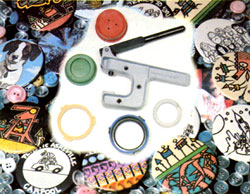

With a little bit of money and a lot of creativity, you too can earn....
As an often-hungry freelance cartoonist, I'm always on the lookout for ways to earn some extra income . . . and to do so with as little expenditure of effort as possible! Well, not long ago-when I was "volunteered" to help with my daughter's Camp Fire Girls bazaar-I stumbled onto an easy method of getting that spare-time scratch.
While at the fair, I ran into a friend who had recently obtained a "button" machine from a company called Badge-A-Minit. By combining my cartooning ability and his equipment, we made quite a hit with the patrons of the bazaar. And even after that day was over, requests continued to pour in .. . for school buttons, campaign buttons, and buttons with "adult" themes.
Granted, my drawing ability helped our business expand rapidly, but-as you'll soon see-you don't need to be artistically inclined to make money with buttons.
GETTING STARTED
My wife and I were aware-from "bazaar day" on-of the tremendous possibilities the little nonelectric device could hold for us. However, we decided to postpone the purchase of a button maker until we could afford to buy one of Badge-A-Minit's more expensive machines. Our friend, you see, owned a small hand-held unit that cost (at that time) $24. We thought that a more durable model would better meet our needs . . . so we held out for a sturdier bench type that went for $94.
The press is sold with enough badge parts to make 250 buttons . . . so as soon as I received the machine, I began to practice. And, just as quickly, I started accumulating "goofs". It seemed no matter how hard I tried, at least eight of every ten buttons turned out wrong. Eventually I realized that the problem wasn't my technique . . . rather, the plastic dies that had come with the machine were faulty.
Naturally, this discovery resulted in a flurry of letters to the Badge-A-Minit company. I'm happy to report, though, that within three weeks the firm sent me two new sets of dies, as well as 50 new badge parts to make up for those that had been ruined. (In fact, I've found the company to be more than fair in its dealings.)
Once the new dies were in place, it didn't take me long to begin earning up to $30 an hour with my new business. And how-you may ask-did I round up cus tomers so quickly? Well, I simply took my equipment to school carnivals, swap meets, fairs, conventions, club meetings, and political rallies. I called area boards of education and the local chamber of commerce, and checked each day's newspaper for listings of local events at which I might get permission to sell my wares. Such happenings can be easy pickings for folks who know how to slant their buttons to each individual get-together.
And, although I usually draw my own figures and cartoons, you could simply cut out photographs, comic strip characters, or whatever illustrations you need. Remember my friend who introduced me to the button business? He can't draw a straight line with a ruler . . . yet he set up a very successful enterprise by using his Polaroid camera to create personal badges. For $2.50, he'll snap a requested photo, trim it, and mount it on a button.
THE PROOF IS IN THE PROFITS
My total initial outlay for equipment and materials came to $101.10. This amount covered the press, a pair of scissors, some felt-tip pens, fine-tip pens, colored pencils, typing paper . . . and a small suitcase to cart the kit around in! (If you decide you'd rather begin with a little hand-held button-maker, you can lower that cost by $70.) I already owned a portable drawing board and camp stool . . . and I hand-printed my signs.
I priced my cartoon creations, which I called "BUTTOONS", at $1.50 each. The profit from the first 250 badges I made was $258 (naturally, I still had occasional failures). Of that money, I spent $63.95 (plus shipping) to purchase parts for 500 more badges, and was able to pocket the rest. Once those buttons were made and sold, I bought 1,000 more badge components . . . and again "kept the change".
Later on, I located another source that offers badge parts similar to those sold by Badge-A-Minit . . . but at lower prices. The company is called Mr. Button Products, and you'll find the addresses of both firms at the end of this article.
WAYS TO SAVE
I've found I can produce 15 identical sketches on one standard sheet of typing paper. Then I take the master sheet to a local printer and have it copied as many times as is necessary to fill my order. The cost is low, and the reproductions are well worth the expense because of the time they save me. One word to the wise, however: Don't count on getting accurate col or reproductions . . . in spite of what the printer may tell you! I learned this lesson the hard way while making 322 cartoon badges for a state senator. I ended up having to handcolor the whole lot . . . and my feelings toward a certain printing firm became darker with each pen stroke.
YOU'RE ON YOUR OWN
You'll probably discover-as I did-that your operation's worst enemy is often you yourself . . . because, if you're not careful, you'll end up giving away a lot of "freebies". This practice will sometimes produce future orders, but generally isn't a good idea.
And there you have it . . . I've told you more than enough to launch your own button-making career. Just remember to keep your eyes and ears open for upcoming events, to spread the word about your business, and to realize that anyone is capable of cashing in on this moneymaking home enterprise idea. So what are you waiting for? Get going, and be the first buttoneer on your block!
EDITOR'S NOTE: Both companies men tioned above offer free catalogs. Badge-A-Minit, Ltd. (Dept. TMEN, Box 618, Civic Industrial Park, LaSalle, Illinois 61301) manufactures button machines that range in price from $17.95 to $239.95. Mr. Button Products (Dept. TMEN, P .O. Box 68355, Indianapolis, Indiana 46268) sells machines in the $59.95 to $995 price range, and of fers 1,000 badge parts for $109.95.
|
 With a few tools, you an make a boodle of buttons and create a home business |
|
|